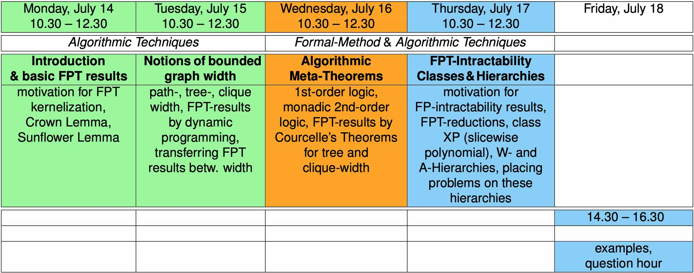

Parameterized Complexity (Advanced Course 2024 – 25)
Lecturer
Room
-
Monday—Thursday (mornings): GSSI Library, Ex-ISEF building,
-
Friday (afternoon): Room A, Ex-ISEF building.
Lecture times
-
Monday, July 14, 10.30—12.30
-
Tuesday, July 15, 10.30—12.30
-
Wednesday, July 16, 10.30—12.30
-
Thursday, July 17, 10.30—12.30
-
Friday, July 18, 14.30—16.30
Overview at a glance

Syllabus
Parameterized complexity theory is concerned with a refined analysis of computational problems. The computational effort needed to decide a problem is described by (1+k)-ary functions that depend not only on the size of problem instances, but also on k ≥ 1 parameters that quantify relevant structural properties of instances. Many intractable problems can be classified to be Fixed-Parameter Tractable (FPT) for appropriate choices of parameter(s). Such FPT problems are frequently tractable in practice for instances with small parameters.
The course is an interleaving of two parts, which focus on algorithmic (A) aspects, and on Formal Methods (FM) viewpoints:
-
The algorithmic part (A) covers methods for designing FPT-algorithms (kernelization, and dynamic programming with graph-width parameters).
-
The formal methods part (FM) introduces algorithmic meta-theorems for obtaining FPT-results such as Courcelle’s theorem, and classifications of FPT-intractability by means of concepts from mathematical logic (the W/A-hierarchies of complexity classes based on model checking problems).
Books
-
Parameterized Algorithms
(link pdf), Springer 2015,
by:
Marek Cygan, Fedor F. Fomin, Lukasz Kowalik, Daniel Lokshtanov, Daniel Marx, Marcin Pilipczuk, Michal Pilipczuk, and Saket Saurabh.
-
Parameterized Complexity Theory
by: Jörg Flum and Martin Grohe, Springer, 2006.
Lectures
-
Introduction and Basic FPT-Results
(slides handout,
slides,
worksheet).
-
Graph width notions, dynamical programming
(slides handout,
slides,
worksheet)
-
Algorithmic Meta-Theorems
(slides handout,
slides,
worksheet)
-
Fixed-Parameter Intractability
(slides handout,
slides,
worksheet)
-
question hour, discussion
Clemens Grabmayer
/
www:
https://clegra.github.io
/
mailto:
c one dot
a one dot
grabmayer one at
gmail one dot
com
/
Last modified: Mon 14 Jul 2025 07:57 CEST
/ /
/